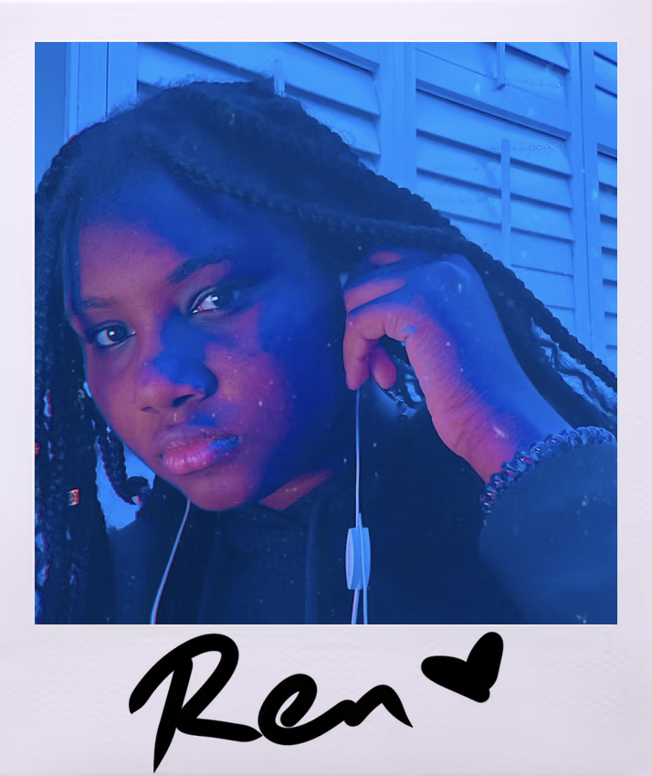

Lauren Moss is a programmer, visual artist, game developer, author, composer, and music producer who grew up on the islands of Grand Bahama and New Providence in The Bahamas.
She has always had a connection to the arts, being surrounded with music from a young age. She has always had the urge to create, be it through music, writing, or drawing, and has developed these skills over the course of many years into what they are today. She now attends the Savannah College of Art and Design, majoring in Game Development and minoring in Music Production. She has dreams to become a full-time composer.
Ren's art is inspired by the way she sees the world. Her experiences, interests, and dreams all become translated through her into her writing, music, and visual art, so that others may understand the world as she does. She also wants to let people who may have had similar experiences in life know that there are others like them.